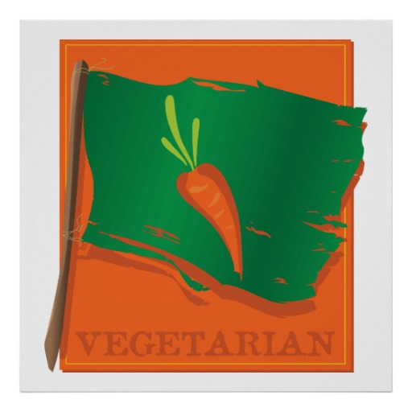
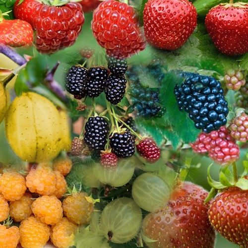

There are so many dietary options out there!
One well known and followed one is vegetarianism. What is this you may ask?
People who are vegetarian usually do not eat any meat, and, depending on the person, no fish either. This can be done for ethical purposes, health purposes, environmental purposes...

A personal experience of being vegetarian : My name is Fiona, I am one of the creators of this website and I have been vegetarian for 7 months! I'm a newbie! I became vegetarian for ethical/environmental purposes because I feel very strongly about animal's rights and I also want to be respectful of our planet in as many ways possible, including limiting water usage and CO2/methane emissions. To me, it just seemed like the best thing to do next that really aligns with my values, but that's just my account of it! What's yours? Leave us a comment!
Next up is veganism, also well know. There are many "types" of vegans but the main idea is not eating any meat, fish or any other animal products such as dairy, eggs, honey. Many vegans also do not buy or wear any leather and don't eat gelatine.
So this dietary choice has become much more popular since it was created in the 1940's. Many are the reasons for that, one of them being the increasing amount of intensive agriculture farms dedicated to providing enough meat for people's desires...
Pescatarianism : similar to vegetarianism but fish is eaten.
The Raw diet : this diet varies from person to person but the idea is to eat only raw and unprocessed foods.

Gluten-free : gluten free can be an obligatory (for coeliac disease and/or dermatitis herpetiformis notably) or a chosen one.
The main goal when going on a gluten free diet, without having a disease forbiding it, is to lose weight and/or simply be healthier.
Those are some of the main dietary choices available! Of course there are many that aren't mentioned but it's a little preview.